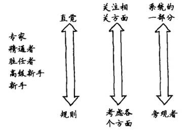

浏览器不支持
impress.js
请使用最新的
Chrome
，
Safari
或者
Firefox
程序员的思维修炼
潘昊
Agenda
德雷福斯模型
现实中的德雷福斯模型
认识你的大脑
主动学习
积累经验
德雷福斯模型
德雷福斯模型
专家
精通者
胜任者
高级新手
新手
阶段1：新手
新手在该技能领域经验很少或者根本没有经验
新手非常在乎他们能否成功。没有太多经验指导他们，他们不知道自己的行为是对是错
如果给新手提供与情境无关的规则去参照，他们就会变得能干起来
规则只能让你启程，不会让你走得更远
阶段2：高级新手
高级新手能够开始多多少少地摆脱固定的规则
可以独自尝试任务，但仍难以解决问题
想要快速获取信息
高级新手能够根据过去的经验，逐步在正确的情境中采纳建议，但比较吃力
能够开始形成一些总体原则，但不是“全貌”
没有全面的理解，而且的确不想有
阶段3：胜任者
现在能够建立问题域的概念模型，并有效地使用它们
他们可以独立解决自己遇到的问题，并开始考虑如何解决新的问题，那些他们之前没有遇到的问题
开始寻求和运用专家的意见，并有效利用
胜任者会探寻和解决问题，工作更多是基于谨慎的计划和过去的经验
处于这一水平的人通常被认为“有主动性”和“足智多谋”
往往在团队中发挥领导作用（无论是否有正式的头衔）
是团队里的好人，既可以指导新手，也不会经常骚扰专家
阶段4：精通者
精通水平的从业者需要全局思维
围绕这个技术，寻找并想了解更大的概念框架
能够纠正以往不好的工作表现
反思以前是如何做的，并修改其做法，期望下一次表现得更好
到这个阶段，自我改进才会出现
会学习他人的经验
阅读案例研究，倾听有关失败项目的经验，观察别人怎么做，从故事中认真学习
理解和运用格言经验之谈的能力
阶段5：专家
专家是各个领域知识和信息的主要来源
总是不断地寻找更好的方法和方式去做事
有丰富的经验，可以在恰当的情境中选取和应用这些经验
专家根据直觉工作，而不需要理由
专家知道应该关注哪些细节，可以放心地忽略哪些细节
专家非常擅长做有针对性的特征匹配
现实中的德雷福斯模型
现实中的德雷福斯模型
不知道自己不知道
在某领域不是很擅长时，更可能认为自己是这方面的专家
无知往往来自于自信而不是知识
从新手到专家的过程
从依赖规则向依赖直觉转变
观念的改变，问题已不再是一个相关度等同的所有单元的集合体，而是一个完整和独特的整体，其中只有某些单元是相关的
从问题的旁观者转变为问题涉及的系统本身的一部分

技能分布
大多数人的大多数技能，在他们生命的大多数时间里，从来没有高于第二阶段高级新手
执行他们需要做的任务并根据需求学习新任务，但是从来没有对任务环境获得更广泛的、概念上的理解
有效地使用德雷福斯模型
十年成就专家
需要积极的实践，需要四个条件：
需要一个明确定义的任务
任务需要有适当难度——有挑战性但可行
任务环境可以提供大量反馈，以便于你采取行动
提供重复犯错和纠正错误的机会
一旦你成了某个领域的专家，在别的领域成为专家就会变得更容易，有了现成的获取知识的技能和模型构建的能力
在实践中保持技能
没有实践就没有技能
模仿->吸收->创新
编程专家必须持续编程，并找到一个有意义、有价值的职业生涯
对组织来说，设置一个能够反映最优秀程序员价值的薪酬等级和职业阶梯
新手需要与情境无关的规则，而专家使用与情境相关的直觉
认识你的大脑
双CPU，单总线
大脑是一个双CPU模式
1号CPU负责线性、逻辑和语言处理
2号CPU是一个超级正则表达式的搜索引擎，负责处理搜索和模式匹配，2号CPU不做语言处理，因而也是不可表达的
这两个CPU共享通向内存核心的总线，每次只有一个可以访问内存
双CPU模式
1号CPU是线性模式：L型。L型让你细致工作，并实现目标
2号CPU是非线性模式：R型。R型对直觉、问题解决和创造性非常重要。R型不能直接控制，是意识的“边缘视觉”。它在存储输入方面特别卖力，这些输入可能被索引。当你解决问题时，R型就开始检索这些输入
L型提供以下能力：语言、分析、符号、抽象、时间、推理、数字、逻辑、线性思维能力
R型提供以下能力：非语言、非理性、综合、具体、分析、空间性、直觉、全面
R型看森林；L型看树木
R型思考
R型只能邀请，不能强制命令。L型是主动性的：当你集中注意力时，它就在工作
拥有创造力和问题解决能力的关键在于寻找思考问题的不同方式
不同的关联会强制R型发起不同的搜索，这样新的素材可能立即就会出现
R型是不可预测的
需要为此做好准备，随时准备记录下R型输出的精辟领悟，不论何时，不论何地
答案和灵感会独立于你的意识活动出现，并且不是总是恰当的时候
联系R型
隐喻相通：L型和R型处理过程截然不同，但是在你的大脑中它们存在一个会合之处
你的大脑存储着它接受到的一切输入，但是，虽然存储着，它不一定会索引这些记忆
当你努力解决一个难题时，你的所有记忆都会被扫描，这不是最有效率的，但这的确能解决问题
自由写是联系R型的一种方法
R型与架构设计
R型的类比和整体思考方式对软件架构和设计非常重要
同步R型和L型保证大脑工作地更好更有效率。R型开路，L型紧跟。酒醉写作，酒醒修改。R型是源头，要给予它自由和无限的空间，如果想法过早地束缚，那么创造力就会被扼杀
综合学习和分析学习并重
相信直觉，但要验证
主动学习
学习是什么
学习不是强加于你，而是需要你主动做的事情
仅仅掌握知识，而不去实践，没有用
随机的方法，没有目标和反馈，往往会导致随机的结果
时间是无法创造和销毁的，时间只能分配
所有知识投资都有价值
养成一种习惯
SMART目标
具体的(Specific)
可度量的(Measurable)
可实现的(Attainable)
相关的(Relevant)
时间可控的(Time-based)
学习方法
发现你的最佳学习方式
使用思维导图探索和发现模式和关系，理清思路
以教代学
写作与阅读一样重要
写文档的过程比文档本身更重要
原生学习模式
如果你能通过图片、图表和视频轻松地记住信息，那么你可能是个视觉型学习者
如果你通过听来记住事物，不论是听课还是大声重复信息，那么你可能是听觉型学习者
如果你通过自己动手去做或者测试的方式而学得最好，那么你可能是动觉型学习者
SQ3R法主动阅读
调查：扫描目录和每章总结，得出总体看法
问题：记录所有问题
阅读：阅读全部内容
复述：总结，做笔记，用自己的话描述
回顾：重读，扩展笔记，与同事讨论
积累经验
利用现有知识
把事物分成大脑可以容纳的几部分
从相似点中学习，从差异中忘却
通过构造来学习，而不是通过学习来构造
正确对待实践中的失败
在你的环境中安全的探索，创造和应用
版本控制，单元测试，构建自动化
诀窍
通过探索可以学习得更好，而不是指令
观察，不做判断，然后行动
用空格或者方向键导航